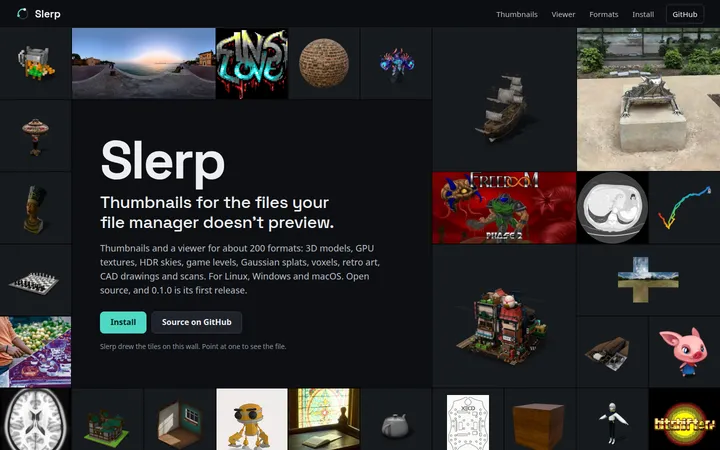
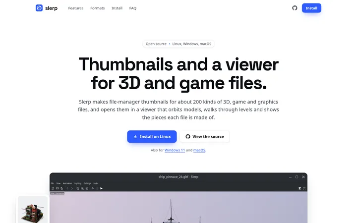
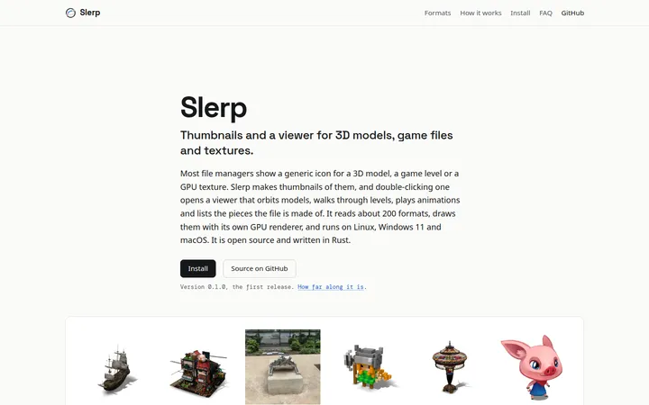

Slerp website mockups
Three directions for slerp3d.com, each built with Slerp's own pictures in site/img/. Pick one (or parts of several); the rest of this folder goes away before the site is published.
-

Wall
Dark and image-first. The top of the page is a wall of Slerp's thumbnails; pointing at one names its file and format. Tabs of viewer screenshots, a Dolphin before-and-after slider, and a format search.
-

Product
Light and polished, in the style of Zed or Obsidian. Install buttons name your platform, a draggable divider compares a Dolphin folder with and without Slerp, and feature rows alternate picture and text.
-

Plain
One plain, typographic column for readers like those on Hacker News, with light and dark themes. A "Does it open .xyz?" box, a diagram of how thumbnails work, numbers, and install commands with copy buttons.